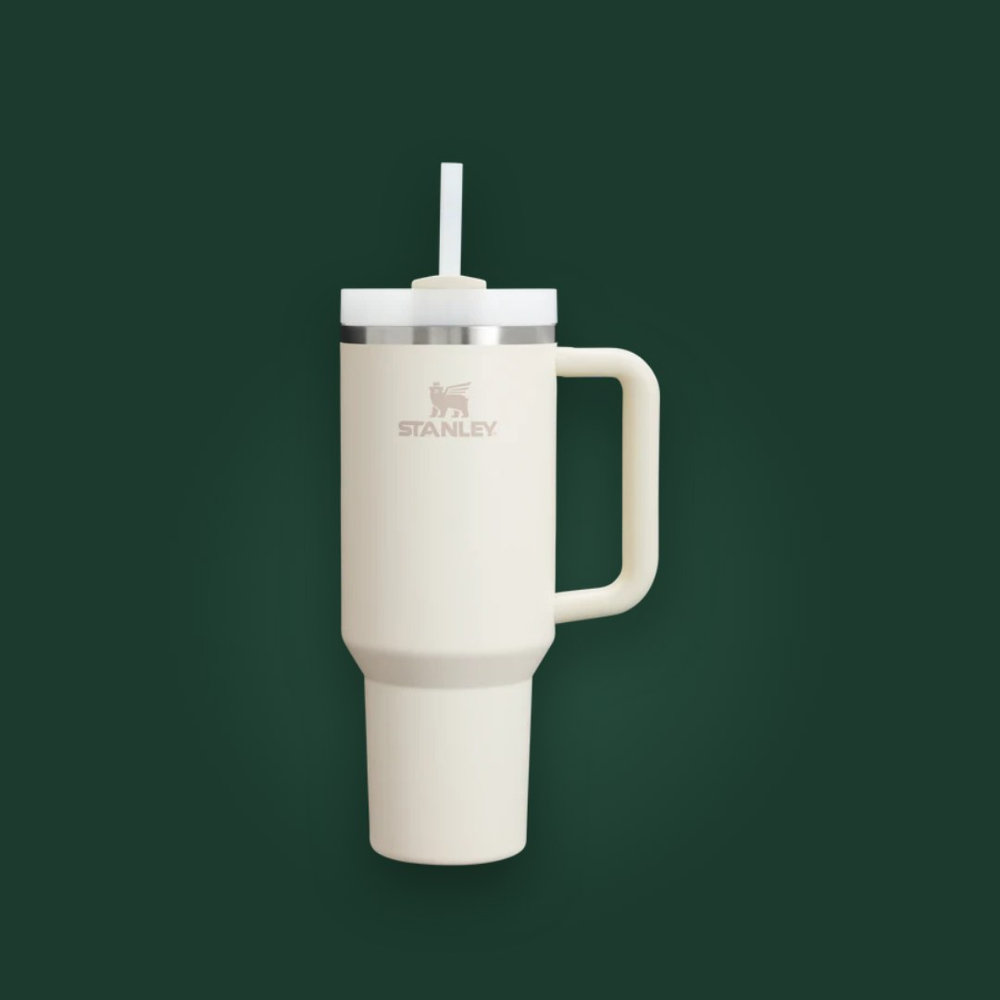
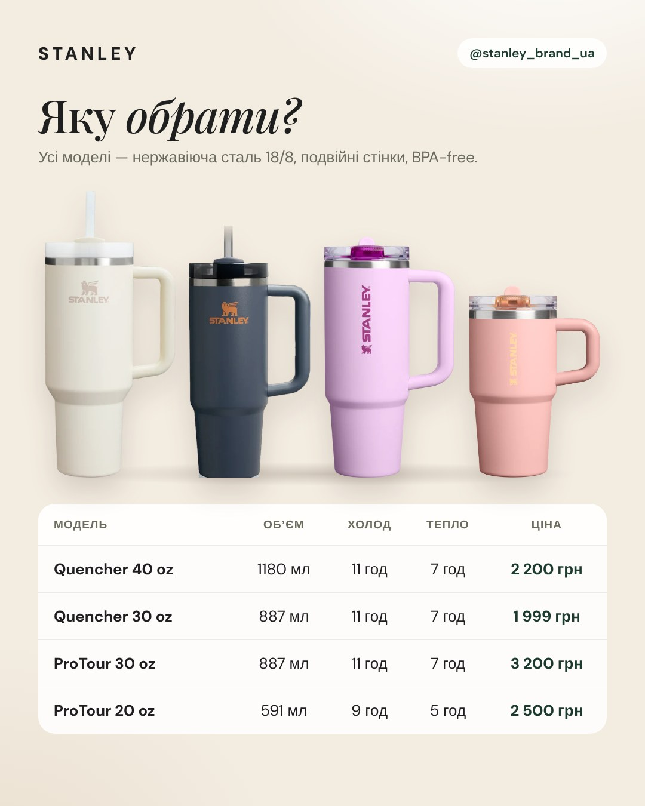
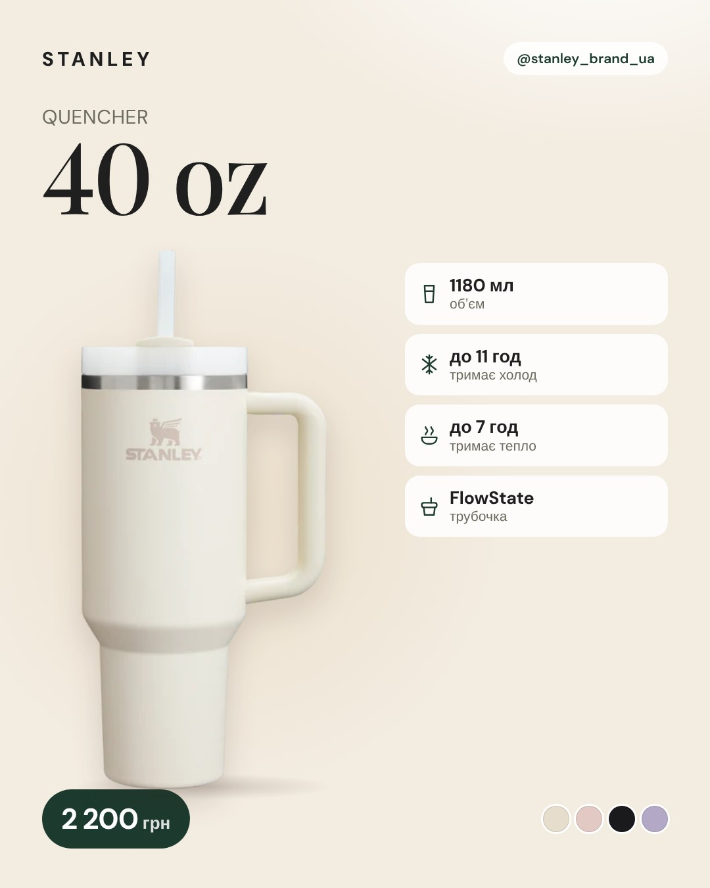
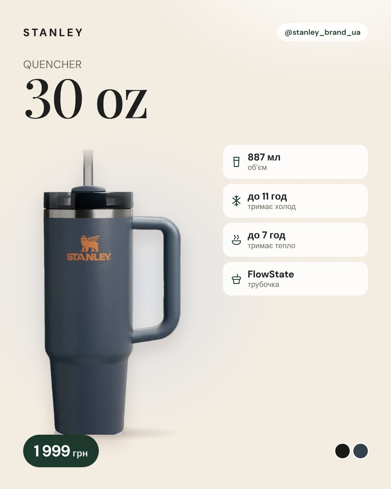
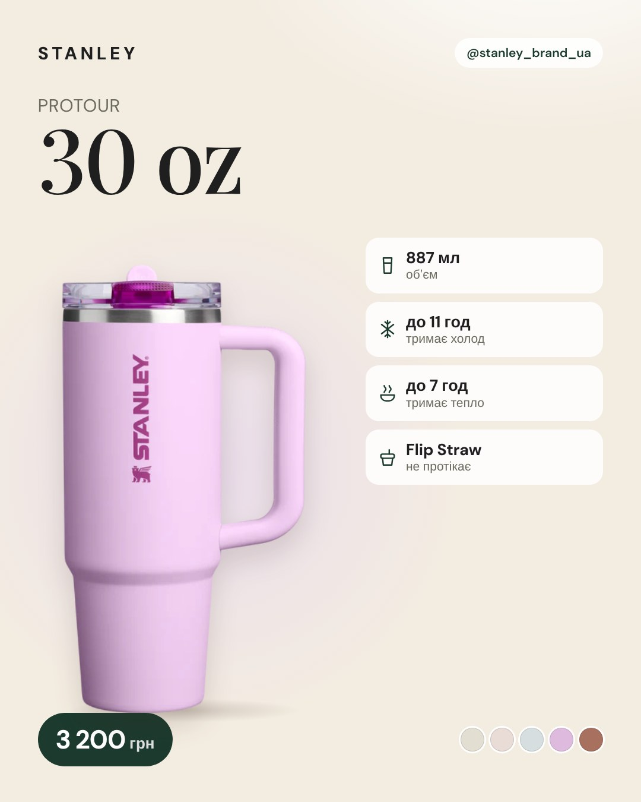
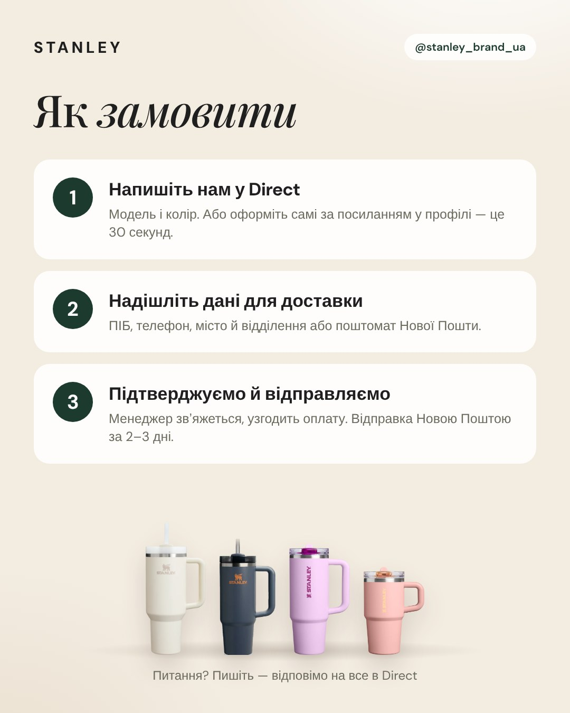
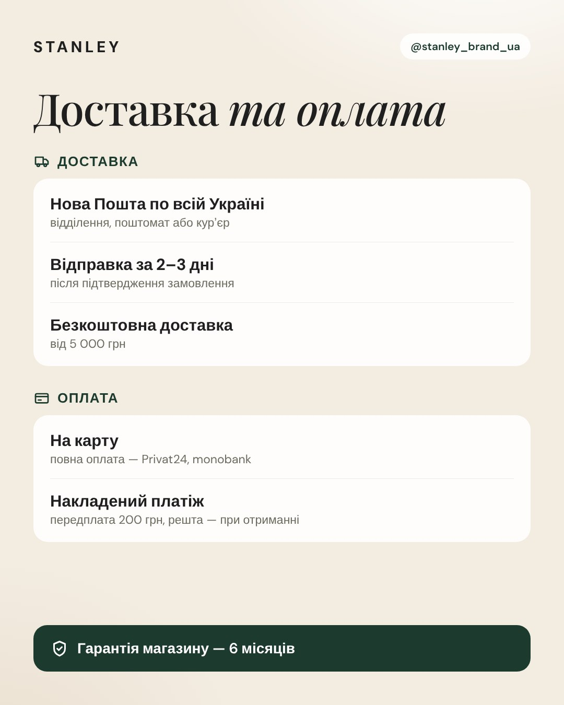
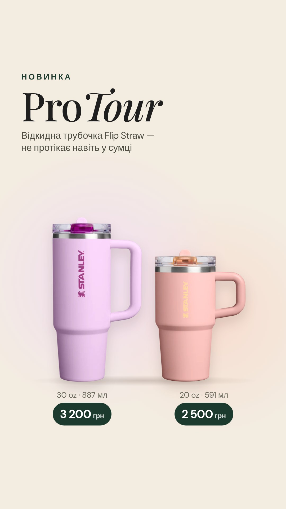
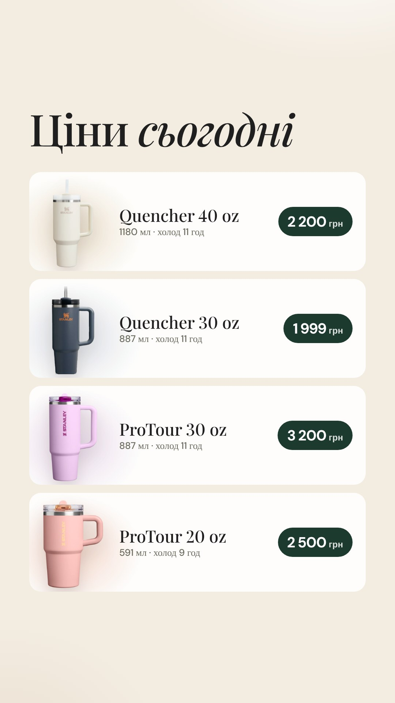

Instagram-магазин Stanley
Картинки и тексты готовы. Осталось четыре шага в телефоне, около 40 минут. Тексты для покупателей на украинском — их копируете кнопкой «Копировать».
Дальше по желанию: «Актуальное», сторис и быстрые ответы в Direct. От вашего имени ничего не публикуется — все публикации делаете вы сами.
Создать аккаунт
- App Store → Instagram → «Загрузить».
- Откройте Instagram → «Создать новый аккаунт» → номер телефона или почта → код из SMS или письма.
- Пароль, дата рождения, имя.
- Имя пользователя: stanley_brand_ua. Если занято не вами — возьмите близкое, например stanley_brand_ukraine, и напишите мне: поменяю его на всех картинках.
- Поиск друзей и фото профиля пока пропустите — фото поставим в шаге 3.
- Профессиональный аккаунт: профиль → ☰ справа вверху → «Тип аккаунта и инструменты» → «Переключиться на профессиональный аккаунт» → категория «Интернет-магазин» → «Бизнес».
Названия пунктов зависят от версии приложения и языка — ищите похожие.
Сохранить фото на iPhone
Способ А — все сразу (быстрее).
Скачать все 20 фото · архив 1,3 МБ- Нажмите кнопку → «Загрузить». Архив попадёт в приложение «Файлы» → «Загрузки».
- Нажмите на архив — появится папка stanley-instagram. Откройте её.
- ⋯ справа вверху → «Выбрать» → «Выбрать все» → «Поделиться» → «Сохранить изображения».
Посты в папке пронумерованы в порядке публикации: step01 … step10.
Способ Б — по одной. Нажмите «Открыть фото» у нужной картинки → фото откроется отдельно → нажмите и удерживайте его → «Сохранить в Фото». Ссылки на посты — в шаге 4, на остальное — здесь:
Заполнить профиль

Так будет выглядеть шапка профиля.
- Профиль → «Редактировать профиль».
- «Изменить фото» → «Выбрать из медиатеки» → аватарка (зелёная с кружкой).
- «Имя» → вставьте текст ниже.
- «О себе» → вставьте описание ниже.
- «Ссылки» → «Добавить внешнюю ссылку» → вставьте ссылку на Telegram. Когда лендинг будет выложен, замените её на ссылку на сайт.
- «Готово».
Термокружки Stanley | Україна
Термокружки Stanley · доставка по Україні Quencher і ProTour — від 1 999 грн Нова Пошта 2–3 дні · накладений платіж Замовлення в Direct або тут ↓
https://t.me/stanley_brand_ua
https://ВАШ-САЙТ/?utm_source=instagram&utm_medium=bio
Опубликовать 10 постов
Так будет выглядеть профиль










Последний ряд — один пост «Доставка та оплата», это нормально. В сетке Instagram показывает картинки чуть уже (3:4): края обрезаются на 3%, текст не задевается. Сам пост открывается целиком.
«Доставка та оплата»
Открыть фото для сохраненияДоставка та оплата Доставка — Новою Поштою по всій Україні: у відділення, поштомат або курʼєром. Відправка за 2–3 дні після підтвердження. Від 5 000 грн — безкоштовно. Оплата: • на карту — повна оплата • накладений платіж — передплата 200 грн, решта при отриманні Гарантія магазину — 6 місяців. #stanley #термокружка #stanleyukraine
«Як замовити»
Открыть фото для сохраненияЯк замовити: 1. Напишіть нам у Direct модель і колір. Або оформіть самі за посиланням у профілі. 2. Надішліть ПІБ, телефон, місто й відділення або поштомат Нової Пошти. 3. Менеджер звʼяжеться, підтвердить замовлення й узгодить оплату. Відправляємо за 2–3 дні. #stanley #термокружка #stanleyukraine
«Кольори»
Открыть фото для сохраненияЯкий колір ваш? Напишіть у коментарях. Quencher 40 oz: Ваніль, Рожевий кварц, Чорний 2.0, Пурпуровий пил ProTour 30 oz: Ваніль, Рожевий кварц, Іній, Орхідея, Мокко-латте ProTour 20 oz: Ваніль, Персик, Рожевий кварц, Іній, Орхідея Наявність кольору уточнюйте в Direct. #stanley #stanleyquencher #stanleyprotour #термокружка #stanleyukraine
«ProTour 20 oz»
Открыть фото для сохраненияStanley ProTour 20 oz — 2 500 грн Компактна версія з кришкою Flip Straw — для авто, спортзалу й коротких поїздок. Не протікає в сумці. • 591 мл • тримає холод до 9 годин, тепло до 5 годин • поміщається в будь-який підстаканник Кольори: Ваніль, Персик, Рожевий кварц, Іній, Орхідея. Замовлення — у Direct. #stanley #stanleyprotour #термокружка #stanleyukraine #термочашка
«ProTour 30 oz»
Открыть фото для сохраненияStanley ProTour 30 oz — 3 200 грн Кришка Flip Straw: натиснули кнопку — трубочка відкрилась, попили, закрили. Не протікає в будь-якому положенні, можна кидати в сумку. • 887 мл • тримає холод до 11 годин, тепло до 7 годин • поміщається у підстаканник авто Кольори: Ваніль, Рожевий кварц, Іній, Орхідея, Мокко-латте. Замовлення — у Direct. #stanley #stanleyprotour #термокружка #stanleyukraine #термочашка
«Quencher 30 oz»
Открыть фото для сохраненияStanley Quencher 30 oz — 1 999 грн • 887 мл • тримає холод до 11 годин, тепло до 7 годин • кришка FlowState і трубочка • поміщається у підстаканник авто Кольори: Графітовий, Темно-синій. Замовлення — у Direct. #stanley #stanleyquencher #stanley30oz #термокружка #stanleyukraine
«Quencher 40 oz»
Открыть фото для сохраненияStanley Quencher 40 oz — 2 200 грн • 1180 мл — вистачає на весь день без доливу • тримає холод до 11 годин, тепло до 7 годин, лід до 2 діб • кришка FlowState з трьома позиціями і трубочка • поміщається у підстаканник авто Кольори: Ваніль, Рожевий кварц, Чорний 2.0, Пурпуровий пил. Замовлення — у Direct. #stanley #stanleyquencher #stanley40oz #термокружка #stanleyukraine
«Яку обрати»
Открыть фото для сохраненияЯку Stanley обрати? Quencher 40 oz — на весь день: 1180 мл, холод до 11 годин. Quencher 30 oz — та сама класика, трохи компактніша: 887 мл. ProTour 30 oz — кришка Flip Straw: натиснув — п'єш, закрив — не протікає навіть у сумці. ProTour 20 oz — найкомпактніша, 591 мл, для авто й спортзалу. Усі моделі — нержавіюча сталь 18/8, подвійні стінки, без BPA. Напишіть, для чого берете кружку, — порадимо модель. #stanley #stanleyquencher #stanleyprotour #термокружка #термочашка
«Ціни»
Открыть фото для сохраненияАктуальні ціни: Quencher 40 oz · 1180 мл — 2 200 грн Quencher 30 oz · 887 мл — 1 999 грн ProTour 30 oz · 887 мл — 3 200 грн ProTour 20 oz · 591 мл — 2 500 грн Безкоштовна доставка від 5 000 грн. Не знаєте, яку обрати? Напишіть у Direct — підкажемо. #stanley #stanleyquencher #stanleyprotour #термокружка #stanleyukraine
«Привіт»
Открыть фото для сохраненияПривіт! Це stanley_brand_ua — термокружки Stanley з доставкою по Україні. У нас 4 моделі та 16 кольорів: • Quencher 40 oz і 30 oz — класика з трубочкою • ProTour 30 oz і 20 oz — відкидна трубочка, не протікає в сумці Як замовити: напишіть у Direct модель і колір або оформіть за посиланням у профілі. Відправляємо Новою Поштою за 2–3 дні. #stanley #stanleyquencher #stanleyprotour #термокружка #термочашка #stanleyukraine
Актуальное и сторис по желанию
Кружки под описанием профиля. Делаются после постов.
- «+» → «История» → выберите сторис «Ціни» → «Ваша история».
- В профиле под описанием нажмите «+ Новое» → выберите эту сторис → «Далее» → название Ціни → «Редактировать обложку» → значок картинки → обложка «Ціни» → «Готово».
- Так же: сторис ProTour → «Моделі», сторис «Замовлення в Direct» → «Замовити». Для «Доставка» и «Оплата» поделитесь в сторис постом «Доставка та оплата» (значок самолётика под постом → «Добавить в историю»).
- «Відгуки» создайте, когда появятся настоящие отзывы покупателей.





Direct: быстрые ответы
☰ → «Инструменты для бизнеса» → «Сохранённые ответы» → «+». В поле «Ярлык» — слово из заголовка, в «Ответ» — текст. Потом в чате набираете ярлык — Instagram подставит весь текст.
Вітаємо! Актуальні ціни: Quencher 40 oz (1180 мл) — 2 200 грн Quencher 30 oz (887 мл) — 1 999 грн ProTour 30 oz (887 мл) — 3 200 грн ProTour 20 oz (591 мл) — 2 500 грн Яку модель і колір розглядаєте?
Відправляємо Новою Поштою по всій Україні — у відділення, поштомат або курʼєром, за 2–3 дні після підтвердження. Від 5 000 грн доставка безкоштовна. Оплата: на карту або накладений платіж (передплата 200 грн, решта при отриманні).
Щоб оформити, надішліть, будь ласка, одним повідомленням: ПІБ: Телефон: Місто: Відділення або поштомат НП: Модель і колір: Оплата: на карту чи накладений платіж
Дякуємо, замовлення прийнято! Перевіримо наявність і напишемо вам сьогодні. Після відправки надішлемо номер ТТН.
Ваше замовлення відправлено! Номер ТТН: ______ Відстежити можна в застосунку Нова Пошта. Гарного дня!
Вітаємо! Як вам кружка? Будемо дуже вдячні за короткий відгук або фото — це допомагає іншим покупцям обрати.
Частые вопросы — кнопки в начале чата
«Инструменты для бизнеса» → «Часто задаваемые вопросы» → добавьте 4 вопроса. Ответы — тексты ярлыков выше.
Скільки коштує? Як замовити? Доставка та оплата Допоможіть обрати модель
Заказ из Direct → ТТН
Покупатель присылает данные по шаблону «замовлення». Вы переписываете их в Telegram-группу с ботом в таком виде — бот покажет проверку и создаст ТТН Новой Почты.
ПІБ: Іванова Олена Тел: +380501234567 Місто: Київ Відділення: 42 Сума: 2200 Опис: Quencher 40oz Ваніль
Для наложенного платежа добавьте отдельной строкой «Накладений». Перед первым настоящим заказом отправьте боту этот пример и проверьте, правильно ли он определил оплату.
Ответы, которые решаете вы
| Вопрос | Что сделать |
|---|---|
| «Це оригінал?» | Напишите одну честную фразу о происхождении товара и держитесь её. Не обещайте того, что не сможете показать. |
| «Є в наявності?» | Проверьте склад перед ответом. Если цвета нет — предложите похожий или срок поставки. |
| «Можна повернути?» | Опишите ваши условия обмена и возврата и сохраните как быстрый ответ. |
| «Знижка на дві?» | От 5 000 грн уже бесплатная доставка. Другие скидки решаете вы. |
Первые 2 недели
Посты делают профиль понятным, а новых людей приводят Reels: вертикальные видео на 7–15 секунд, снятые на телефон. Под каждым — «Ціна та замовлення — у Direct».
| День | Что сделать |
|---|---|
| 1 | Шаги 1–4 этой страницы. |
| 2 | Reels: тест со льдом в Quencher. Насыпали лёд → «прошло 11 часов» → лёд на месте. Снимайте только после настоящей проверки. |
| 3 | Сторис: опрос «Який колір обрали б?» с двумя фото. |
| 4 | Reels: ProTour вверх дном над раковиной — не протекает. |
| 5 | Reels: все цвета в ряд, медленная панорама под трендовый звук. |
| 6 | Сторис: упаковываем заказ (без имён и адресов покупателей). |
| 7 | Reels: Quencher 40 oz в подстаканнике авто. |
| 8 | Reels: распаковка одной кружки. |
| 9 | Сторис: стикер «Вопрос», ответы на следующий день. |
| 10 | Reels: «Скільки це — 1180 мл?» — переливаете две бутылки по 0,5 л и ещё немного. |
| 11–14 | Повторите видео, которые набрали больше всего просмотров, с другим цветом. Первые настоящие отзывы — в «Актуальное». |
Проверить перед публикацией
- Цены одинаковые в Instagram, на лендинге и на основном сайте.
- Условия доставки, оплаты и гарантии актуальны.
- Все 16 цветов есть в наличии. Если нет — скажите, уберу лишние с картинок.
- В «Відгуки» — только настоящие отзывы, с согласия покупателей.
- Реквизиты карты — только в личных сообщениях, никогда в постах и сторис.
- Stanley — торговая марка. Правообладатель может пожаловаться на неё в имени аккаунта. Если профиль заблокируют, безопаснее имя без «stanley».
Ссылки «Открыть фото» ведут на файлы в вашем репозитории на GitHub. Он публичный, поэтому фото открываются без входа. Ссылки работают, пока существует ветка claude/brave-cori-tx5v25.